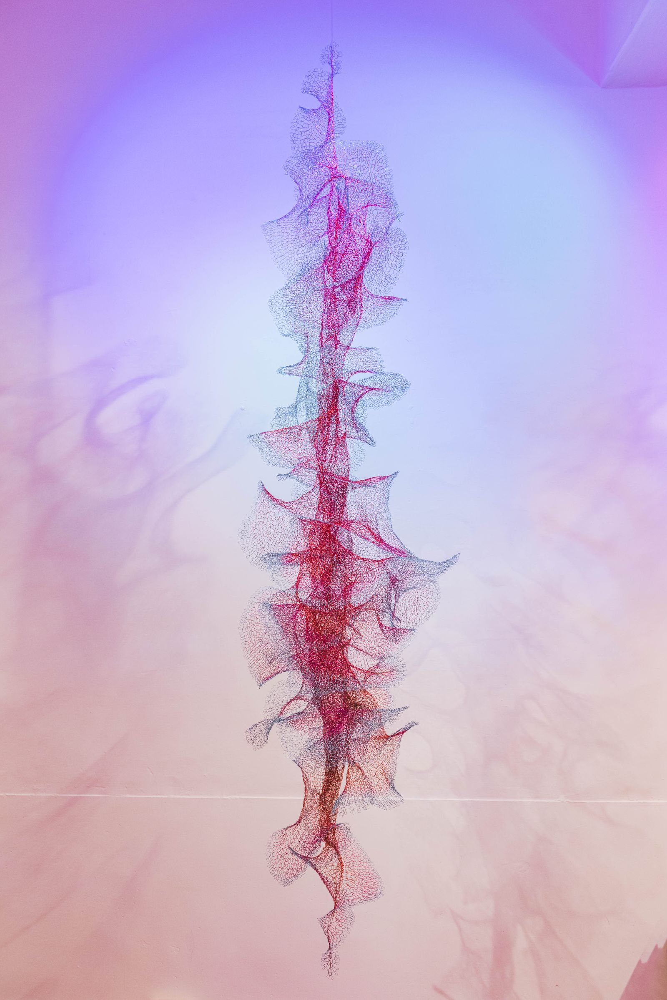
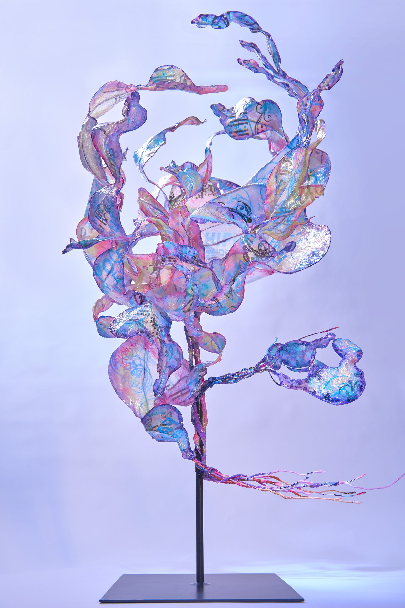

文 / Gershwin chang, managing editor
文章轉載自 / Prestige Online
編織是傳統技藝，對Julia Hung洪郁雯來說，則是她藝術創作的技法，而利用不同的媒材進行創作，對Julia是一種對於自己關心議題的發聲與再思考。對她來說，創作是沉浸的過程，對於她所知、所解之事的反芻與交織而建構出完整世界的形貌，這是她重新向世界、自己的記憶與事件對話的思考，編織出屬於自己的理想與觀點。
「我喜歡編織，編織讓我非常著迷的地方，是不需要任何其他的材料，只要簡單的工具就可以相互連結，就好像是世界萬物的相互連動。」從2019屏東燈會的創作「星光潮來」到2020年個展「似識而非」，Julia的創作都是以編織作為技法，問起她對於「編織」的想像，她給了我一個充滿哲學的回答。Julia告訴我，編織是跟從小把她帶大的祖母學的，這是她沉浸的療癒，「幾個簡單的動作，就能透過想像力成就無限的可能，『編織』這件事的確讓我相當著迷。」編織的重複動作，確實是讓人靜下心來的過程，當進入一種「flow」的狀態時，人可以平靜的思考各種人生的哲理，「也非常地療癒。」
加上是手工操作，在萬事都講求效率的現今社會，「速度」上相對比較慢，在這個時代難得的平靜時刻、喘息的空間，都是奢侈的享受：「同時，每鉤一針是視覺、也是時間的堆疊，視覺化我的生命。」對創作者來說，每件藝術品都承載著生命中的「時間片段」，以觀察者的角色來看這個「片段」的確非常有趣，加上Julia多使用傳統不會拿來「編織」的媒材進行創作，每種媒材都有屬於自己的特性，因應媒材的特性來實驗不同的技法，編織出想要呈現的感覺與線條，從鉤針的點、媒材的線，創造出想要的面，對於喜歡嘗試新事物的Julia來說，也是非常有趣的過程。
從生活中創造靈感，是Julia創作的起源。早期在瑞士時，她以「食物」作為創作的媒材，笑說自己是除了自己是「愛吃」的人，食物也代表著「時代」及「地區」中各種社會層面的文化，「我將自己對食物的記憶、生命中體驗過的情感，以及觀察到的社會現象，透過食材創作為『以假亂真』的人造食物藝術，觀者可以同時品嚐及感受我想討論的議題。」這是Julia眼中的「人造現實」，因為我們所處的時代早已真假難辨，被創造出的人與事，其實在某一層面上也是某種自我，真真實實的存在這個世界上，到底是真是假也已無法辨認，「所以，不管是人造的有機體，或是編織所塑造的點線面，其實都是構成這個世界的輪廓，即使是人為的，也有屬於它存在的意義。」

重塑觀點
Julia近期用塑膠袋進行編織，其實也是一種對社會觀察的重塑。當時的她從歐洲搬回台灣，發覺在台灣生活中驚人的塑膠袋用量，「同時也感受到，大多數人們眼中商業效益較低的事物，會被視為『沒有用』與『沒有價值的』。」尤其是當他看到姚謙的紀錄片《一個人的收藏》時，影片中有人說「賣不出去的藝術品就是垃圾」，更讓Julia思考藝術在人們心裡的「用處」與「價值」的評斷，看到功利化的社會對於哲學與文化價值的淺碟化評價。於是，她收集回收塑膠袋及各種消費後的廢棄物，把承載人類「回憶」的物品重塑成藝術創作，她想問，透過她的「手工」一般人眼中沒有用處與價值的東西，是否有機會被賦予新的意義，這是Julia對現今消費文化下的價值觀所提出的疑問，「同時，我也希望透過這些創作，讓觀者對於現下的各種環境污染及社會問題，進行反思。」
